OPTITALENT
Pemilihan Karyawan Terbaik Bermetode AHP

Dosen Pembimbing:
Setyoningsih Wibowo, ST., M. Kom
Kelompok 3(4E):
Arif Alfian Choirul Anwar (23670119)
Kelvin Bintang Ardiansyah (23670148)
Alivia Nuraida (23670132)
Rahardiana Fauziatun Nufus (23670110)
Masuk Ke Aplikasi